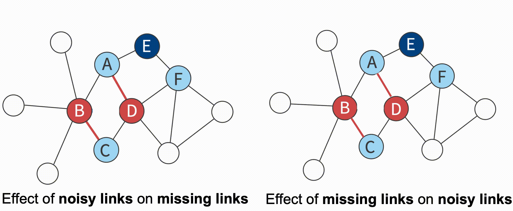
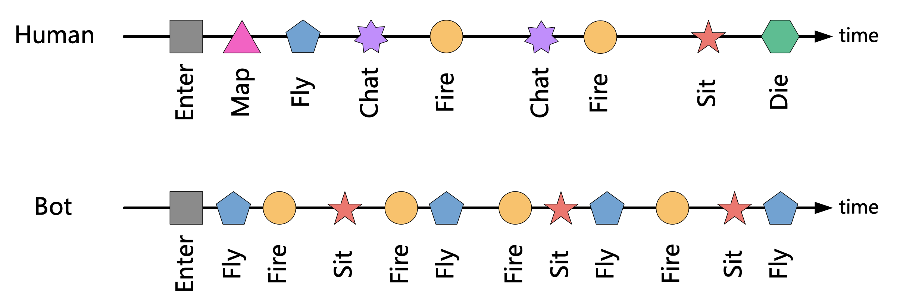

I am currently a second grade master student at Department of computer science and technology, Zhejiang University, advised by Yang Yang. I obtained my bachelor degree from Zhejiang University.
My research interests include graph representation learning, social network analysis and data mining.
xuanyang {at} zju [dot] edu [dot] cn

Network data in real-world tends to be error-prone due to incomplete sampling, imperfect measurements or even malicious attacks. This in turn results in inaccurate results when performing network analysis or modeling on these flawed networks.
Our research aims to reconstruct a reliable network from a flawed one, a process referred to network enhancement. More specifically, network enhancement aims to detect the noisy links that are observed in the network but should not exist in the real world, as well as to complement the missing links that do indeed exist in the real world yet remain unobserved.
From one perspective, we turns the network enhancement problem into edge sequences generation, and employ a deep reinforcement learning framework to solve it, which takes advantage of downstream task to guide the network denoising process (NetRL, Xu et al, TKDE'21).
From another perspective, we construct a self-supervised learning framework that identifies missing links and nosiy links simultaneously by leveraging the mutual influence of them (E-Net, Xu et al, TKDE'20).
Furthermore, we study the model robutness against adversarial attacks. Our work shows that even without any information about the target model, one can still perform effective attacks (Xu et al, AAAI'22). To handle the adversarial vulnerability problem, we further propose an unsupervised defense technique to robustify pre-trained deep graph models (Xu et al, AAAI'22).

We propose a general game bot detection framework for massively multiplayer online role playing games termed NGUARD+ (denoting NetEase Games’ Guard), which captures user patterns in order to identify game bots from player behavior sequences. NGUARD+ mainly employs attention-based methods to automatically differentiate game bots from humans. We provide a combination of supervised and unsupervised methods for game bot detection to detect game bots and new type of game bots even when the labels of game bots are limited ([Tao and Xu et al, KDD'18];[Xu et al, TKDD'20]).
We propose a general game bot detection framework for massively multiplayer online role playing games termed NGUARD+ (denoting NetEase Games’ Guard), which captures user patterns in order to identify game bots from player behavior sequences. NGUARD+ mainly employs attention-based methods to automatically differentiate game bots from humans. We provide a combination of supervised and unsupervised methods for game bot detection to detect game bots and new type of game bots even when the labels of game bots are limited ([Tao and Xu et al, KDD'18];[Xu et al, TKDD'20]).
We propose a general game bot detection framework for massively multiplayer online role playing games termed NGUARD+ (denoting NetEase Games’ Guard), which captures user patterns in order to identify game bots from player behavior sequences. NGUARD+ mainly employs attention-based methods to automatically differentiate game bots from humans. We provide a combination of supervised and unsupervised methods for game bot detection to detect game bots and new type of game bots even when the labels of game bots are limited ([Tao and Xu et al, KDD'18];[Xu et al, TKDD'20]).
Xuan Yang, Yang Yang, Chenhao Tan, Yinghe Lin, Zhengzhe Fu, Fei Wu, Yueting Zhuang.
Unfolding and Modeling the Recovery Process after COVID Lockdowns. Submitted to Nature Human Behavior. [PDF]
Xuan Yang, Yang Yang, Jintao Su, Yifei Sun, Shen Fan, Zhongyao Wang, Jun Zhan, and Jingmin Chen. Who's Next: Rising Star Prediction via Diffusion of User Interest in Social Networks.
In IEEE Transaction on Knowledge and Data Engineering, doi: 10.1109/TKDE.2022.3151835, 2022 [PDF]
Jintao Su, Yang Yang, Xuan Yang, Yuxiao Dong and ChilieTan。
”DeepGraphlet:Estimating Local Graphlet Frequencies with Graph Neural Networks”.
IEEE Transaction on Knowledge and Data Engineering Submission.
Teng Ke, Yang Yang, Shiliang Pu, Xuan Yang, Quanjin Tao, Yifei Sun, Weihao Jiang, Hui Wang and Yingye Yu.
"Detecting Telecommunication Frauds by Human-in-the-Loop Graph Neural Networks".
IEEE Transaction on Knowledge and Data Engineering Submission.
Taoran Fang, Zhiqing Xiao, Chunping Wang, Jiarong Xu, Xuan Yang, Yang Yang.
DropMessage: Unifying Random Dropping for Graph Neural Networks. NeurIPS 2022 Conference Submission.
PC Members: KDD 2020-2022, AAAI 2023, WSDM 2023, ECML-PKDD 2022, SDM 2022
Reviewers: IEEE Transactions on Knowledge and Data Engineering (TKDE), IEEE Transaction on Big Data, IEEE Transactions on Network and Service Management